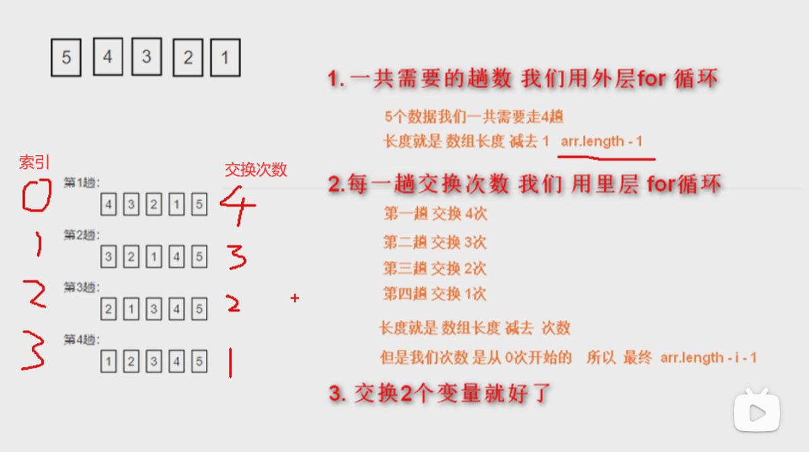

<!DOCTYPE html>
<html lang="en">

<head>
    <meta charset="UTF-8">
    <meta http-equiv="X-UA-Compatible" content="IE=edge">
    <meta name="viewport" content="width=device-width, initial-scale=1.0">
    <title>Document</title>
</head>

<body>
    <!--  -->
    <!-- 不会可以参考图片！！！！！！！！！！！！！！！ -->
    <script>
        /*冒泡排序是一种简单的排序算法。
        它重复地走访过要排序的数列，一次比较两个元素，
        如果他们的顺序错误就把他们交换过来。
        走访数列的工作是重复地进行直到没有再需要交换，也就是说该数列已经排序完成。
        这个算法的名字由来是因为越小的元素会经由交换慢慢“浮”到数列的顶端。
        比如数组[2,3,1,4,5]经过排序成为了[1,2,3,4,5]或者[5,4,3,2,1]
        */


        let arr = [2, 3, 1, 4, 5]
        // 外层循环控制走了几趟 数组中有几个数就是 i< 几个数-1趟
        for (let i = 0; i < arr.length - 1; i++) {
            // 里层循环控制一趟交换几次arr.length - i - 1次
            for (let j = 0; j <arr.length - i - 1; j++) {
                //比较大小
                if (arr[j] > arr[j + 1]) {
                     //互换位置
                   let temp = arr[j]
                    arr[j] = arr[j + 1]
                    arr[j + 1] = temp
                }
            }
        }
        console.log(arr);

        /*
        1.一共需要的趟数我们用外层for循环
                5个数据我们一共需要走4趟
                长度就是数组长度诚去1 arr.length - 1
        ⒉.每一趟交换次数我们用里层for循环
                第一趟交换4次
                第二趟交换3次第三趟交换2次第四趟交换1次
                长度就是数组长度减去次数
                但是我们次数是从0次开始的所以最终arr.length -i -1
                                                5-0-1
                                                5-1-1
                                                5-2-1
                                                5-3-1
        3.交换2个变量就好了
      


        // 从大到小排列
        let arr1 = [2, 3, 1, 4, 5]
        // 外层循环控制走了几趟 数组中有几个数就是 i< 几个数-1趟
        for (let i = 0; i < arr1.length - 1; i++) {
            // 里层循环控制一趟交换几次arr.length - i - 1次
            for (let j = 0; j <arr1.length - i - 1; j++) {
                //比较大小
                if (arr1[j] < arr1[j + 1]) {
                     //互换位置
                   let temp = arr1[j]
                    arr1[j] = arr1[j + 1]
                    arr1[j + 1] = temp
                }
            }
        }
        console.log(arr1);
    </script>
</body>

</html>